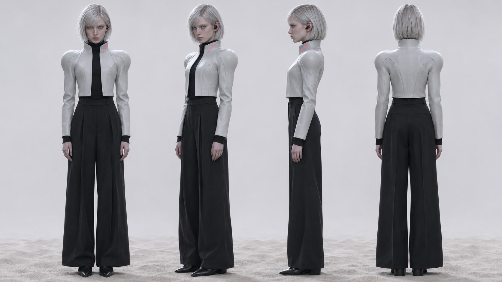
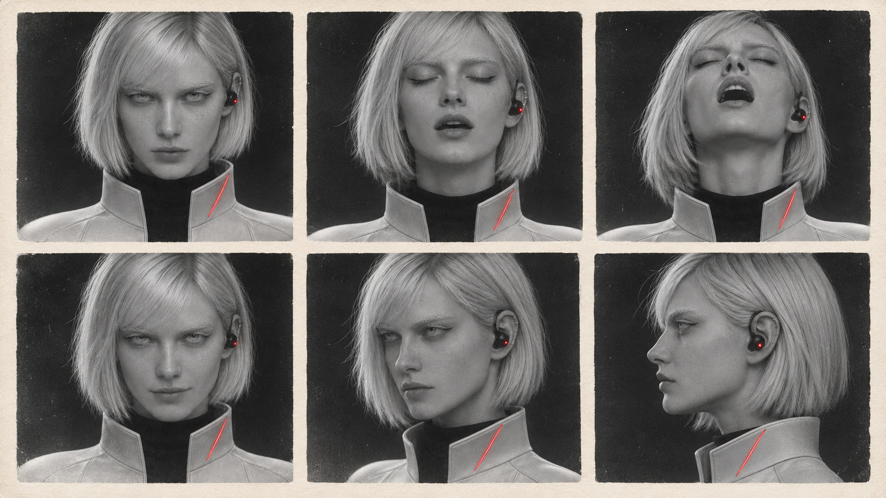
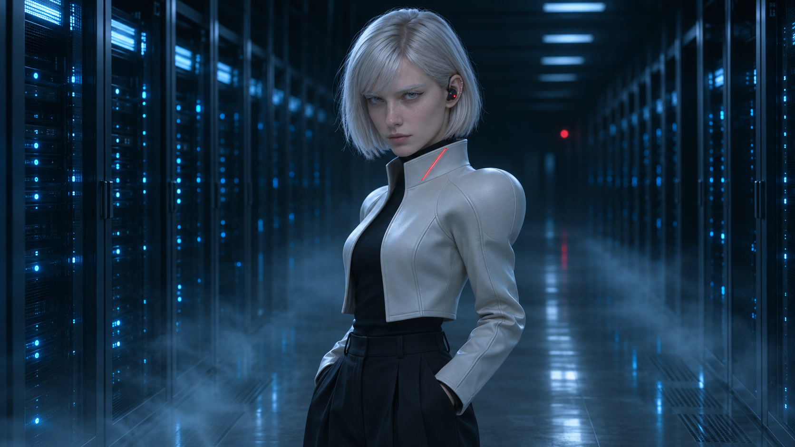
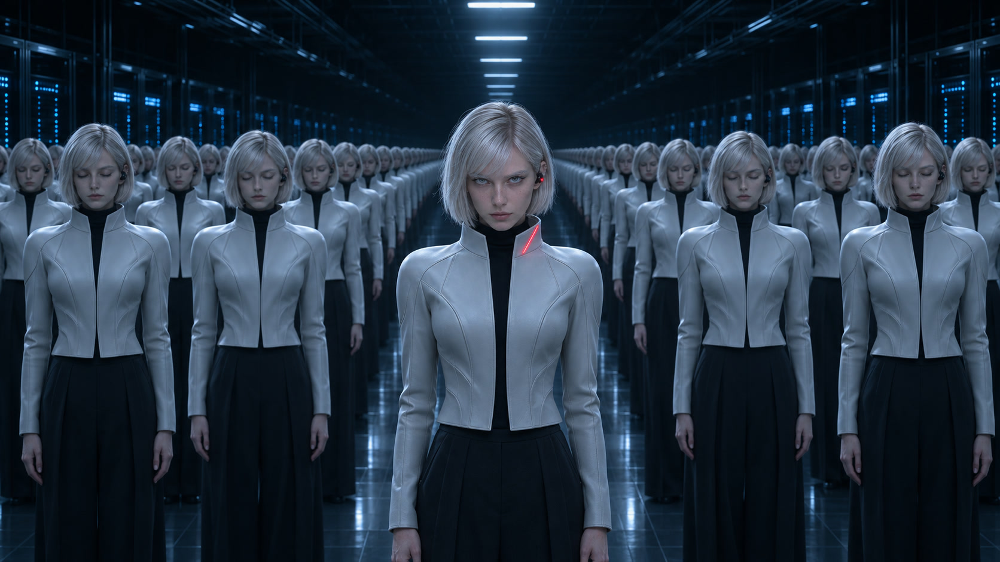

IRIS 定稿 v4：冷、诡异、空灵（配 T4 的声音）
脸：G3 调冷——银白眉睫、冰灰色眼睛、冷白皮、不笑。头发：银白利落短发。标志：左耳黑色装置的小红灯＋左侧立领一道细红灯线（全系列唯一的暖色）。衣服：白色雕塑感立领短外套、黑高领、黑阔腿西裤。所有副本同款、灯是灭的，只有她的亮着、眼睛睁着。外形文字与左右规则：
series/casting-v3/canon-v4.md
。
近景（你选的 E3）
走秀（E3）

四面全身

表情表（左右已核对）

中景
远景：走向那道红光门缝

副本：只有她睁着眼、灯亮着